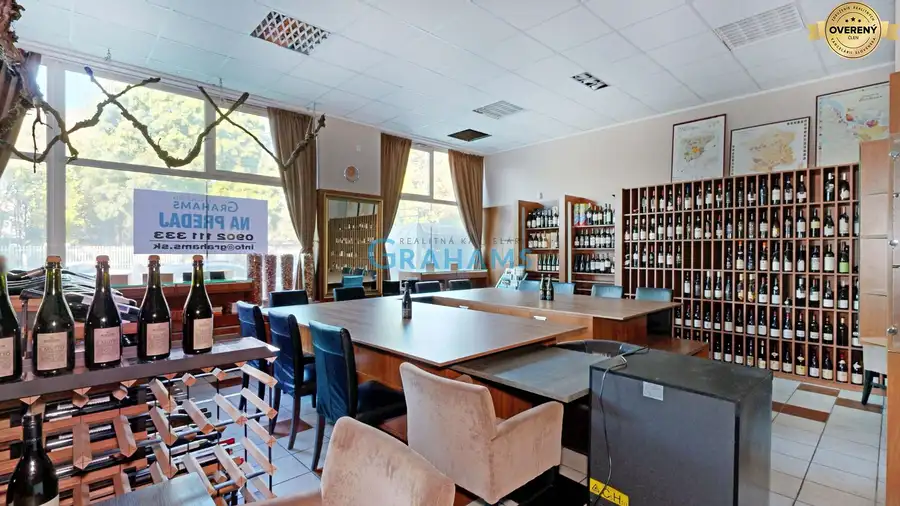
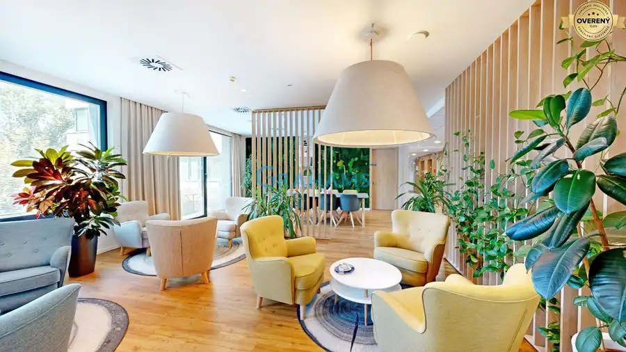
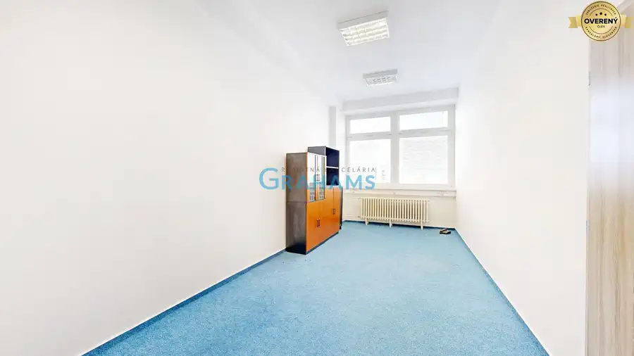

Prestížne zelené kancelárie s certifikátom LEED Gold v Lakeside Parku
Nové Mesto, Bratislava
- Plocha54 m²
- Poschodie6. z 12
- Stavpôvodný
- Vlastníctvofiremné
- Energetická triedaA
O nehnuteľnosti
Realitná kancelária
GRAHAMS
Vám v zastúpení klienta ponúka na prenájom kancelárske priestory
, na ulici Tomášikova
v k.ú. Nové Mesto (Bratislava III). Nachádzajú sa v komplexe biznis centra Lakeside Park v obchodnej časti, s výbornou dopravnou infraštruktúrou. Komplex tvoria 2 budovy 18 poschodová (LP1) a 12 poschodová (LP2). K dispozícii je niekoľko priestorov, ktoré sa upravujú na základe požiadavky nájomcu. Aktuálne voľné priestory v LP1 a LP2 sú uvedené nižšie. Podrobnejšie informácie dostupnosti osobne po konzultácii. Možnosť prenájmu parkovacieho státia v oboch budovách pre automobily aj pre bicykle.
Obidve budovy majú energetický štítok a
kancelárie triedy A
, čo predstavje najvyššiu kvalitu. Budova LP1 a LP2 sú zaradená do kategórie
zelených budov
, bol im udelený
certifikát LEED Gold
.
Štandard kancelárií (obe budovy)
:
Úsporné kancelárske svietidlá, kazetový strop – svetlá výška 2,8 m2, elektronická detekcia požiaru a stabilné hasiace zariadenia, kompletný HVAC systém, vnútorné tienenie, kvalitná vzduchotechnika, vlastná kuchynka, sadrokartónové priečky, zdvojená podlaha, kobercová krytina v štvorcoch, dátová kabeláž kategórie 6A, 1 podlahový box na 10 m2 (vrátane 2 dátových a 2 silových zásuviek).
Štandard budovy (obe budovy)
:
24/7 prístup do budovy, reprezentatívna recepcia, strážna služba s kontrolovaným vstupom, reštaurácia a kaviareň priamo v budove, možnosť využitia konferenčnej miestnosti, parkovanie pre návštevy so vstupom z Vajnorskej ul. zdarma, 7 vysokorýchlostných výťahov a 2 obslužné výťahy k parkovacím plochám, športoviská a relax pri jazere Kuchajda.
Aktuálna ponuka v budove LP01
:
Poschodie Celková plocha Dostupnosť
3. posch. 1 688,40 m2 dohodou
4. posch. 1 680,73 m2 dohodou
5. posch . 76,68 m2 dohodou
13. posch. 250,01 m2 dohodou
15. posch. 1 236,88 m2 dohodou
16. posch. 191,06m2; 247,55 m,2; 285,29 m2; 508,68 m2 dohodou
17. posch. 1 236,88 m2 dohodou
18. posch. 1 236,49 m2 dohodou
19. posch. 1 122,59 m2 dohodou
20. posch. 1 122,59 m2 dohodou
Podmienky prenájmu:
Cena : kancelárske priestory:
12,90 - 13,25EUR/m2/mesiac
servisné poplatky: 4,90EUR/m2/mesiac,
parkovacie miesto: 95,00EUR/mesiac
Doba nájmu: min. 60 mesiacov alebo dohodou
Uvedené ceny podliehajú zdaneniu DPH.
Aktuálna ponuka v budove LP02
:
Poschodie Celková plocha Dostupnosť
Prízemie. 436,19 m2 ihneď
Prízemie. 54,61 m2 ihneď
6. posch. 1 224,71 m2 ihneď
7. posch. 1 266,67 m2 ihneď
10.posch. 491,27 m2 dohodou
10.posch. 99,79 m2 ihneď
Podmienky prenájmu:
Cena : kancelárske priestory:
13,90 - 14,25EUR/m2/mesiac
servisné poplatky: 4,90EUR/m2/mesiac,
parkovacie miesto: 95,00EUR/mesiac
Doba nájmu: min. 60 mesiacov alebo dohodou
Uvedené ceny podliehajú zdaneniu DPH.
Komplex Lakeside Park
poskytuje
kancelárske priestory najvyššej kvality so sídlom v rozvinutej obchodnej časti Bratislavy, iba 4 km od centra Starého Mesta. Obe budovy disponujú najmodernejšími technologickými riešeniami so zameraním na úsporu prevádzkových nákladov a energií, čím sú priaznivé k životnému prostrediu.
Reprezentatívna recepcia, príjemné spoločné priestory, rôzne relaxačné a komunikačné zóny predurčujú, aby sa tu ľudia cítili pohodlne, komfortne a nerušene vykonávali svoju prácu.
Budovy sú prepojené na prízemí, avšak je možnosť horizontálneho prepojenia a vytvorenia priestoru s rozlohou viac ako 3.000 m2. Prístup do budovy je 24/7.
Občianska vybavenosť
tejto lokality je výborná. Priamo v budove sa nachádza reštaurácia, kaviareň, Klientske centrum, neďaleko je Fresh market, OC Vivo, v neposlednom rade jazero Kuchajda so športoviskami.
Dostupnosť:
verejná doprava (autobus, vlak-železničná stanica Mové Mesto, električka), auto, bicykel, pešo.
Ak Vás táto
mimoriadna ponuka
zaujala, neváhajte ma kontaktovať. Nezabudnite si pozrieť
3D VIRTUÁLNU PREHLIADKU
.
Naša 3D prehliadka zobrazuje vzorový priestor v štandardnom vybavení v budove LP2.
Dostupnosť ponúkaných priestorov môže byť odlišná, je aktualizovaná na základe konkrétnej požiadavky záujemcu.
Zodpovedný maklér: Ing. Erika Kostroňová, kontakt: , email:
Upozornenie: Popis nehnuteľnosti - text a fotodokumentácia - je majetkom a autorským dielom spoločnosti Grahams © Copyright Grahams
Parametre
| Celková rozloha | 423 m² |
|---|---|
| Úžitková plocha | 54 m² |
| Poschodie | 6 |
| Počet poschodí | 12 |
| Vlastníctvo | firemné |
| Stav | pôvodný |
| Internet | optika |
| Kúpeľňa | áno |
| Výťah | áno |
| Parkovanie | vlastné vyhradené |
| Postavené z | Zmiešané |
| Zariadenie | čiastočne |
| Zateplený objekt | áno |
| Klimatizácia | centrálna |
| Káblová televízia | áno |
| Energetický certifikát | A |
| Bezbariérový prístup | áno |
| Okná | hliníkové |
| Novostavba | áno |
| Dátum zverejnenia | 1. 9. 2026 |
Kde to je
Mohlo by Vás zaujímať

Nebytové priestory10 169 900 €Klimatizovaný obchodný priestor - showroom alebo klinika,vstup z ulice Podunajské Biskupice, Bratislava 107 m² Realitná kancelária Grahams Vám v exkluzívnom zastúpení klienta ponúka na predaj nebytový/obchodný priestor s výmerou 107 m², na ulica Estónska, v…
Nebytové priestory10 Cena dohodouPrvotriedne kancelárske priestory na nábreží Dunaja – Zuckermandel Staré Mesto, Bratislava 10 m²1. podlažie Realitná kancelária Grahams Vám v zastúpení klienta ponúka na prenájom unikátne kancelárske priestory s výmerou od 10 m2 na 1. poschodí 5…
Nebytové priestory10 Cena dohodouFunkčný kanc. priestor od 18,5 m2, skvelá dostupnosť a cena, Ružinov. Ružinov, Bratislava 18.5 m²5. podlažie Realitná kancelária Grahams Vám ponúka na prenájom kancelárske priestory v moderne zrekonštruovanej budove na Drieňovej ulici v mestskej časti…